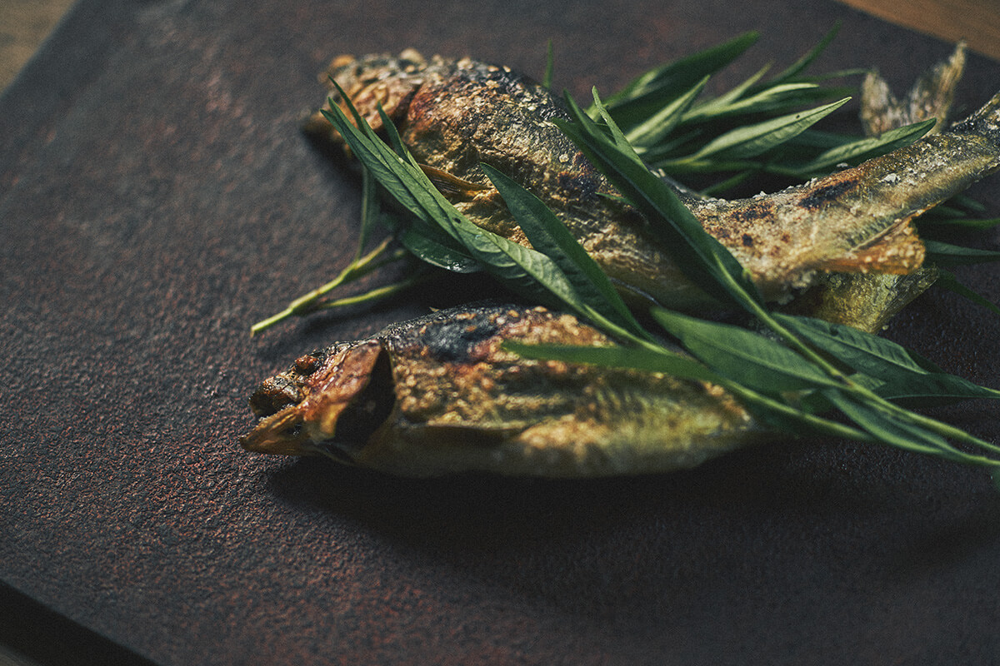

Sōwadō
Behind a featureless concrete wall with a plain black sliding door, there's no sign. That's the point. Chef Hideaki Sakai — originally from Fukuoka — runs this as the sibling restaurant to Sakai Shokai, channeling Kyushu ingredients into refined small plates over charcoal. The genshiyaki (ancient-style skewers grilled slowly over a brazier) anchor the experience, but the tsukune dipped in golden egg yolk and the rotating sashimi are what people talk about afterward. Excellent natural wine and sake list. Omakase is the move. Reservations required — try TableCheck.